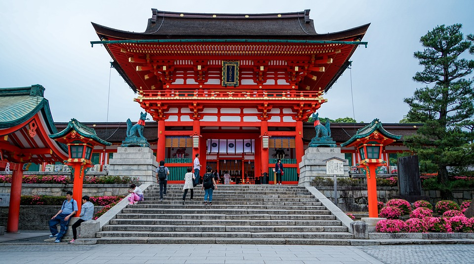
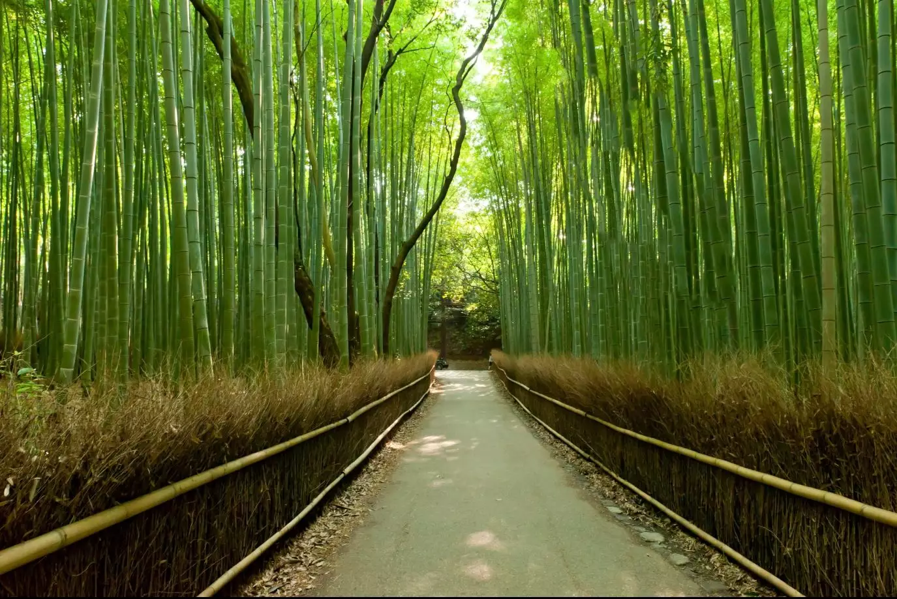
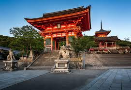
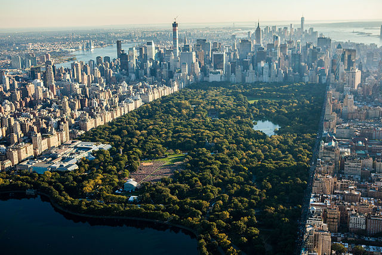
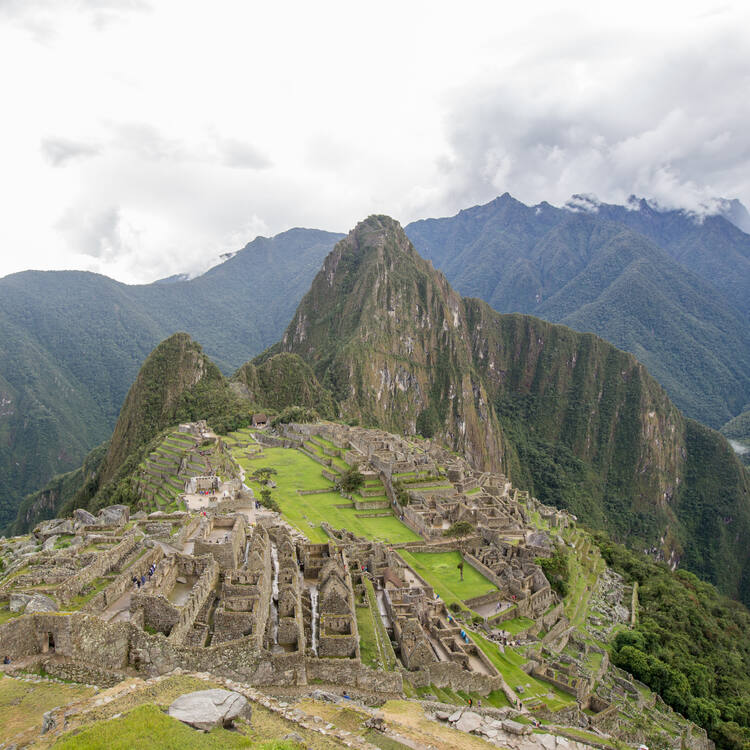
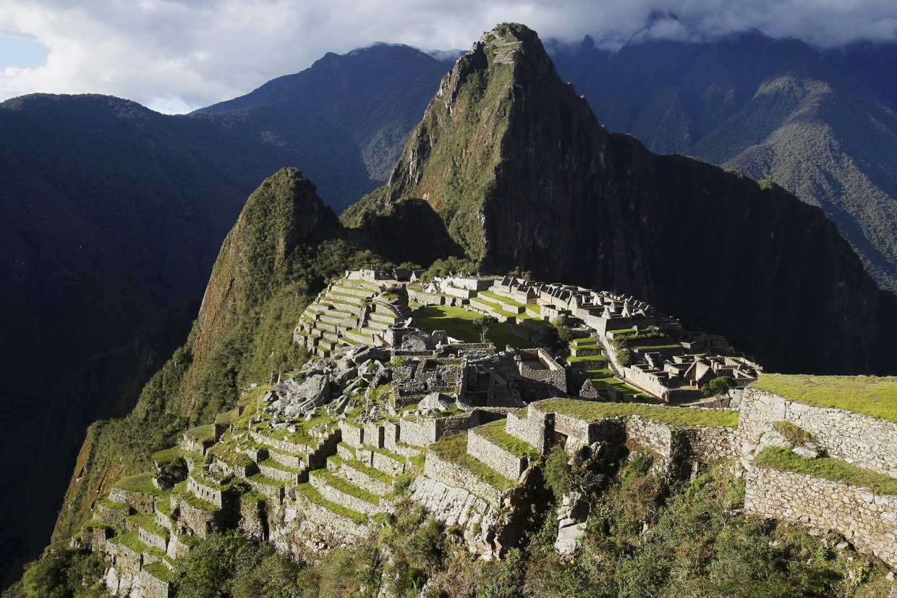
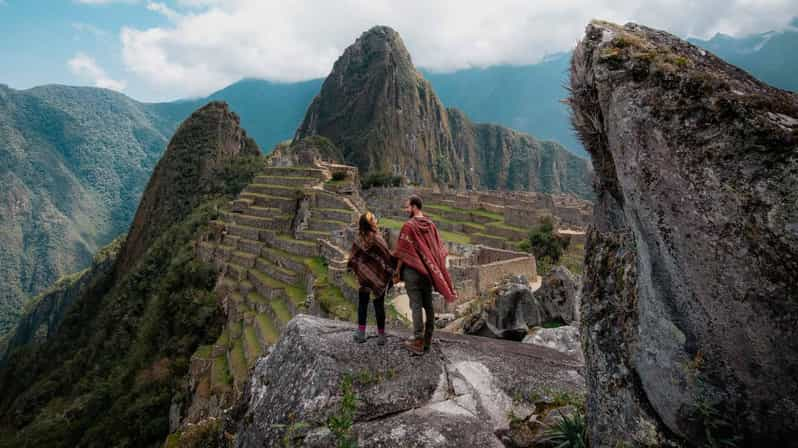

Tarih: 2024 Yazı (Planlanıyor)
Lokasyon: Kyoto, Japonya
Kyoto'yu, Japon kültürünü keşfetmek ve tarihi tapınakları gezmek için ziyaret etmek istiyorum. Fushimi Inari Tapınağı'nı görmeyi ve Arashiyama Bambu Ormanı'nda yürüyüş yapmayı planlıyorum.
  Tarih: 2025 Kışı (Planlanıyor)
Lokasyon: New York, ABD
New York'a Özgürlük Heykeli'ni ziyaret etmek, Central Park'ta yürüyüş yapmak ve Broadway gösterilerine katılmak için gitmek istiyorum.
Tarih: 2026 Sonbahar (Planlanıyor)
Lokasyon: Machu Picchu, Peru
Machu Picchu'yu görmek, antik İnka kalıntıları arasında gezmek ve Inka Yolu'nu yürüyüşle keşfetmek istiyorum.
  